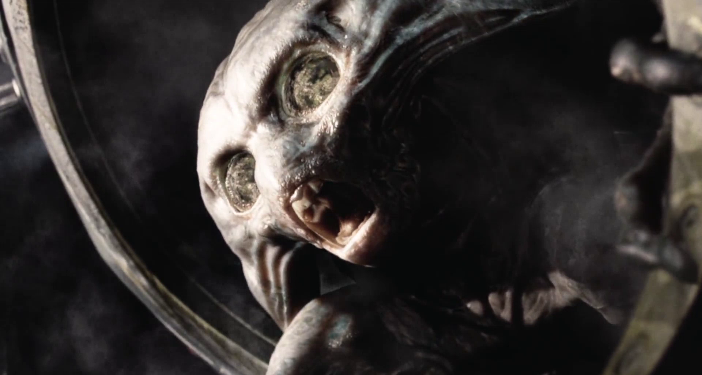

I think the mere notion of remaking or rebooting or reimagining a popular story for new audiences is often very unfairly maligned by the general pop-culture-watching public. A lot of people, who consider themselves enjoyers of creative storytelling, will instinctively balk at the news that some hitherto established intellectual property is getting a new installment under fresh creative direction.
Frankly, I think that sort of response is incredibly shortsighted, and often rooted in no small amount of unhealthy nostalgic reverence for whatever particular version of a story happen to be the one someone first saw. That's not to mention the amount of unnecessary agita being spuriously ginned up by hollow outrage merchants these days, should any upcoming remake of a popular story be visibly more racially- and gender-diverse than its inspiration.
I'm not averse to critiquing a reimagined story, or hearing others do the same. I just think its not too much of an ask to want those critiques to be thoughtful and constructive. Not only does kneejerk blanket anti-remake griping help no-one else - you're only doing yourself a disservice if you choose to never consciously engage with a text, not even to meaningfully identify or articulate what you think it could have done better. Rather, I'd suggest that making focused analyses and criticisms of individual remakes on their own merits can be a great pathway to thinking about the storytelling process in a very media-literate and culturally-conscious way.
To that end, I think some of the best discussion to be had about remakes can be found surrounding how a lot of the earliest science-fiction stories in particular have been adapted over the years. Many of the earliest pieces of sci-fi literature have essentially become highly-recognisable public domain stock plots that anyone can freely adapt however they wish. Think Frankenstein, The Time Machine, Twenty Thousand Leagues Under the Seas, Tarzan of the Apes - works like these are some of the earliest attempts to create compelling social commentary in fantastical settings for a mass audience. So much of classic science-fiction speaks to such fundamental questions of social critique, and has been around so long, we've seen countless efforts made to adapt a great deal of it for new audiences. Including by people from all over the world, by people born in every successive generation since this material was written, and by people from countless different linguistic, cultural, political, and artistic backgrounds.
In my view, that's what makes analysis and discussion of sci-fi adaptations in particular so potentially rich with literary and aesthetic value. Namely, the genre's deserved popular longevity, and that there's thus a longstanding tradition of showcasing new ways to realise their fantastical scenes and recontextualise their foundational themes. So we have ample material to pour over as modern critics, and our analysis of adaptational authorial intent can be greatly heightened by comparing different remakes of the same source texts.
I include the above preamble as a way of grounding my thinking here, assure the reader I am not simply anti-remake, and hopefully prove some sort of bonafides on my own part concerning casual discussion of science-fiction adaptations. Because, specifically, herein I want to discuss the narrative and thematic essence of one of my personal favourite classic sci-fi stories - H. G. Wells' The War of the Worlds. And more pointedly, why I think Steven Spielberg's 2005 film adaptation of it is an almost quintessential example - not of bad film-making, per se, - but of a uniquely botched opportunity to adapt the original text effectively.
To start, we need to establish the core narrative and thematic elements of the original War of the Worlds to properly articulate what any worthy adaptation of it does - and doesn't necessarily - need. The basic premise of the novel is simple: it's Victorian England, a bunch of hostile Martians come over to Earth, they destroy a lot of stuff, they look to be on the verge of conquering our entire planet, but eventually the Martians all die off from an Earth disease they had no natural immunity to. It's a consciously a commentary on how European nations - particularly the British - had been treating much of the rest of the world for centuries, and it's very intentionally written to be shocking to genteel Victorian readers.
To be compelling, an adaptation of War of the Worlds shouldn't merely be trying to replicate literally every detail of the book scene-for-scene. Any remake or reimagining of this story - regardless of whatever medium or form it's in - is better served by an effort to faithfully adapt the themes and emotional resonance of the original book by tweaking or building on the plot where necessary.
For instance; in Wells' book, the immense power of, and threat posed by, the invading aliens is established by having them fairly easily destroy London - the foremost city of its day, and one surely most of the book's readers would feel scandalised by the idea of being destroyed with a chemical weapon. A Twentieth or Twenty-First Century film adaption of the story might consider substituting this scene for one that conveys the same threatening tone for a more modern audience. Perhaps, for example, by having the invading Martians explode a nuclear device on top of Washington DC or the Pentagon military headquarters in the United States.
A change like that may alter some of Wells' original story, but it does so to ensure the adaptation's primary audience connects emotively and intuitively with the story in a way that is more in-line with how the source material was designed to connect with its readers. Also, if done ably, these sorts of alterations to the original novel can be the perfect place for an imaginative designer or director to showcase their own creative ideas.
Case in point: in the book, the Martians' iconic main war-machines are giant mechanical tripods; this demonstrates their immense technological prowess, and how different their vehicles are to anything used by Humans. Particularly in any sort of illustrated or visual adaptation of War of the Worlds, this is the perfect opportunity for a passionate designer to show off their own spin on what that sort of machine might look like - be it as a description in a literary retelling of the premise, or a drawing in a comic, or a practical rig on stage, or as a digital design in a movie or a videogame. Real standout examples of exactly this include the thirty feet tall, flame-spewing, animatronic tripods used to great effect to emphasise the Martians' menacing presence in Jeff Wayne's stage musical War of the Worlds - and the levitating, laser-toting, pseudo-tripods of the 1953 George Pal-directed War of the Worlds film, which particularly underscore the invaders' technological superiority over Earth, even as by then we'd developed city-destroying weapons of our own.

Four interpretations of the iconic tripod design. From left to right: an original doodle by author H. G. Wells, illustration by Henrique Alvim Corrêa from a 1906 publication, levitating special-effect pods in the 1953 George Pal movie, and a full-size pyrotechnic war machine prop in the Jeff Wayne rock-opera stage musical adaptation.
In my opinion, the most crucial element of a good War of the Worlds adaptation is that it conveys the shock and terror readers of the original book felt. In the novel, that scandalous sense of horror is derived from the fact Britain is so easily ravaged by the Martian forces, and they even do so in a way that seems to almost justify itself by the standards of Victorian imperial morality. These aren't just barbarians orgiastically sacking Rome; it's an advanced civilisation that views and treats England much the same way the sneering Victorian imperialist would see a Sub-Saharan mud-hut village. Any prospective War of the Worlds remake lives or dies on its ability to shock its audience like that.
This is why I would suggest one of the very best, of the many, War of the Worlds adaptations to have ever been made is Orson Welles' 1938 Mercury Theatre radio-drama version. It's certainly become on of the most well-known in popular culture since, and I would argue, for good reason. This broadcast was so effective as an adaption of the story, specifically because of how well it captured the original book's shocking nature.
The modern urban legend that the broadcast itself caused widespread panic amongst listeners who mistook the story as a real news-broadcast is spurious. Its listeners did not seriously think Martians had literally invaded Earth, and at no point did the Mercury Theatre show ever purport to be a genuine emergency broadcast either. However, a significant amount of people did legitimately take issue with the broadcast citing a supposed disregard for moral decency. Many contemporary commentators chided Welles' production company and its broadcast partners for airing something describing the cataclysmic invasion of the Earth - and the United States, in this adaptation, in particular - by a immeasurably stronger foe. They called it politically subversive, defeatist, and unnecessarily agitating at a time when Humanity really was looking down the barrel at another real imminent World War.
Whether or not telling a story describing mechanised war as hellish and ruinous is least-appropriate or more-necessary-than-ever in such a time is another question entirely; the fact of the matter is: it made for one particularly effective adaptation. Which brings me to the point where I can specifically articulate my thesis here: that, in 2005, Steven Spielberg flubbed his one-of-a-kind, never-to-be-repeated, opportunity to adapt The War of the Worlds that well again.
Spielberg's film is perfectly competent, middle-of-the-road, action movie fare. It's a fairly straightforward film adaptation of Wells' original plot, and it goes without saying that Steven Spielberg knows how to direct a movie production well. The basic plot is essentially the same: Martians invade Earth in their tripods, and they're way stronger than anything Earth can throw at them in defense. We, the audience, see all this largely from the perspective of a civilian caught up in the chaos of the alien attack. Things seem hopeless, but thankfully the Martians ultimately end up all dying from exposure to Earth's microbes.
Spielberg and his co-writers know that it makes sense to change the setting from Victorian England to the present-day USA. We see the aliens attack there, it's a fitting inversion of real-world modern geo-political power dynamics in line with the themes of the original book. Plus, it effectively demonstrates the power and threat of the Martians - in that the paramount US Military is powerless to protect even their own soil from this threat. All the main cast are seasoned Hollywood A-listers that play their parts well. The visual effects all largely hold up, and the sound design for the Martian tripods in particular is great - the movie definitely earned its three Oscar nominations there.
In many respects, the movie is well-made. But, when it comes to expressing that vital sense of shock-horror, this War of the Worlds misses the mark. Making a middling movie isn't exactly a mortal sin. However, I do lament the fact Spielberg missed his opportunity to capture that sense of jarring, scandalous, terror in a way only he could have. Because I feel one particular, simple, change made towards the end of the script could have made this otherwise decent, but unexceptional, film a sort of avant-garde cinematic statement piece - one properly befitting Spielberg's groundbreaking directorial reputation hitherto no less.
The alteration that, in my view, needed to be made to Spielberg's War of the Worlds script, was that it fundamentally should have included some way of making its 2005 movie-going audience truly feel the startling gravitas of the alien invasion. An invasion of our planet's most powerful nation by beings from another world ought to leave us stunned - caught between thinking that this is just as much a sort of cosmic repayment for our hubris, as much as it is simply the awful will of a superior predator in a dog-eat-dog world completely apathetic to our species' survival. Either way, we must be made to feel a bone-chilling dread realising that every assumption we've ever made about a occupying a secure place in a peaceful universe has just been proven dead-wrong.
From a practical film-maker's perspective, the question thus becomes: how do you truly terrify cinema-goers like that in 2005? Is it even possible anymore? One-hundred years earlier, just watching a steam-train accelerate towards the camera sent grown men - unfamiliar with the novel concept of a newsreel - running out of the cinema. By the Twenty-First Century, audiences were much harder to scare with visuals alone. Was it just because regular movie-watchers had already seen apocalyptic destruction done before countless times before and become acculturated to it? Was it because even the average Westerner had seen real death and destruction reported on television-news for at least fifty years by that point? By the time Spielberg's War of the Worlds appeared in cinemas, the whole world had now witnessed the September Eleventh attacks - and the subsequent invasion of Iraq - broadcast in real-time just a few years prior. Cultural attitudes had changed, and massive destruction - even real destruction, in major urban centres - was no longer novel to a mass audience.
For whatever reason - or confluence of reasons - a movie released in 2005 could probably just never be meaningfully unsettling to most savvy viewers by way of visual spectacle alone. Hence why my hypothetical small suggestion as to how this adaptation could have been made great lies in making a change to the script instead. If I could magically travel back in time and give Spielberg and company some advice about making this film - with the benefit of two decades' hindsight - I would tell him to try and use all of his executive behind-the-scenes string-pulling power to get this movie made as a surprise sequel to one, or both, of his earlier iconic alien-centric movies.
Steven Spielberg, in 2005, was uniquely positioned to get just about any film he wanted financed, filmed, and distributed - no questions asked. Furthermore, he and his production studio alone would have the professional, authorial, and artistic capacity to reintroduce designs and characters originally created for his earlier works E.T.: The Extra-Terrestrial and Close Encounters of the Third Kind
Consider the following. At the very end of Spielberg's actual War of the Worlds, you finally get the scene - lifted more-or-less straight from the book - where all the main characters realise the Martians are suddenly dying. A group of Human soldiers tentatively approach a collapsed tripod - it's very tense, and they point their guns at it, - and a hatch opens up on the underside of the pod, and out flops this sickly dying Martian. That Martian is of a fairly generic alien design. While it comes at the very end of the movie, it also happens to be the first time the audience - and the main characters - get a proper, unobstructed, close-up view of what these invaders look like.

Spielberg's War of the Worlds alien design. Nothing special.
I don't think anyone has ever been scared by that design. What if, instead, that dying alien was revealed to be one of the cutesy glowing-finger homunculi of E.T.? I think that would effectively rattle an audience of Spielberg-viewers stewed in twenty-three years of nostalgia for those little guys. And did the plot of The Extra-Terrestrial not already establish that remaining on Earth is apparently debilitating to this species?
What if, perhaps, - seconds before a looming alien tripod melted a group of cowering Human refugees with a heat-ray, it blared out that, ever-memorable, playful little five-note tone from Close Encounters? If the effectiveness of a War of the Worlds adaptation hinges on its ability to surprise and shock its audience, and upend all our assumptions about humanity's standing in the universe in the spirit of the original novel, then Spielberg was distinctly positioned to recontextualise his earlier work to fantastic effect here.

Living on Earth almost killed the eponymous Extra Terrestrial in ET. Just imagine if the friends he phoned back home came over here looking for vengeance.
Spielberg truly could have done it; I don't believe there's any insurmountable reason this theoretical version of the film couldn't have been made if he was intent on it. More to the point, only Spielberg had the capacity to pull this trick off. To be clear: it would be a trick. It would be a gimmick. It would have undoubtedly been controversial among average cinema-goers and self-described serious cinephiles alike. Some people would surely still be complaining about it today. But I maintain, we're all much too afraid of a little creative iconoclasm here and there; going for it would have been the right creative decision to make.
I think this sort of gimmicky 'twist' would have greatly improved Spielberg's War of the Worlds, - it would have, at the very least, frankly made it a lot more memorable. And I don't put any stock in the kneejerk, fanboyish, notion that any of the earlier Spielberg movies which could have had elements be lifted from to create this twist would be in any way retroactively diminished or besmirched by the effort. There are no sacred cows in art, and certainly a bold creative decision ought not to be eschewed just because it would be controversial.
The entertainment industry is admittedly just that, an industry. It's a commercial enterprise - perhaps nowhere moreso than at the apex of the Hollywood popcorn-cinema industrial-complex where Spielberg has lived for decades. But that doesn't mean there isn't room for genuine artistic statement and creative endeavours therein either. My hypothetical 2005 War of the Worlds rework would still just be a commercially-released movie, but I think it would have had the potential to say something at least a little bit meaningful about our collective expectations of popular culture and how we might sometimes become a little too nostalgically, reverentially, invested in the media of bygone decades. It still wouldn't exactly be high-art, but at the very least, I do think this idea would have been better than the 2005 War of the Worlds we actually got: a middle-of-the-road action flick that doesn't particularly shock, doesn't particularly excite, isn't particularity novel, and doesn't creatively iterate on its source material like so many other adaptations of Wells' book have.
last major update: May 2026